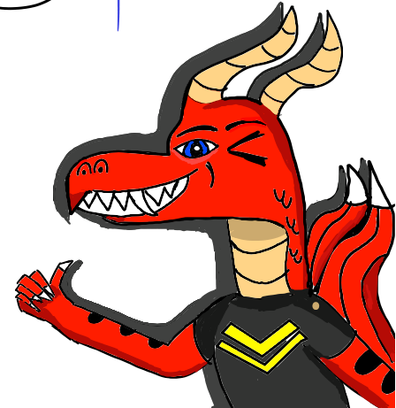

Joshua Bratton
I started taking these classes as a way for me to not only develop skills on one of my interests, I also started taking these classes as a means for an alternative in case game design doesn't work out. However I would also like to get a job in this feild because it has always interested me. I heard about the cohort program they have here at Bitwise and have been fixaded on that ever since. I plan to try my hardest in order to get into one of these cohorts, no matter how many sleepless nights it takes. But, I also just love the people and the atmosphere at Bitwise. A little about me is that I am a gamer. I love playing video games and just can't wait for the next big release to come out. I also work at a small restaurant call Aisan BBQ and Pho. As much as I love my bosses and co-workers, I get paid jack all, and am trying to look for a new job/carreer. In fact, the night I'm making this I got called out of work because it was so slow. Finally, if you couldn't tell already by how much text I have here, I love storytelling. I like telling stories, making stories, and writing them. That's why videogames appeal to me so much. I like a good story and I just want to be able to tell my own. Domonique if you made it down this far, congrats! But thank you for taking the time to read this. (P.S Also I really like dragons.)
